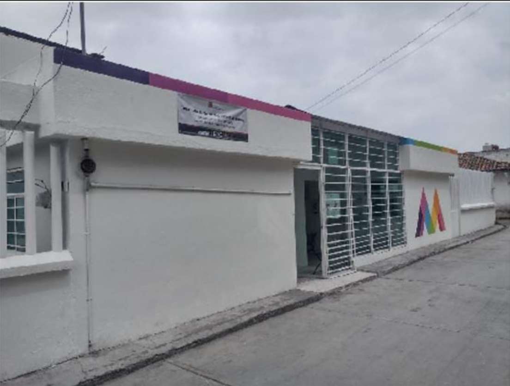
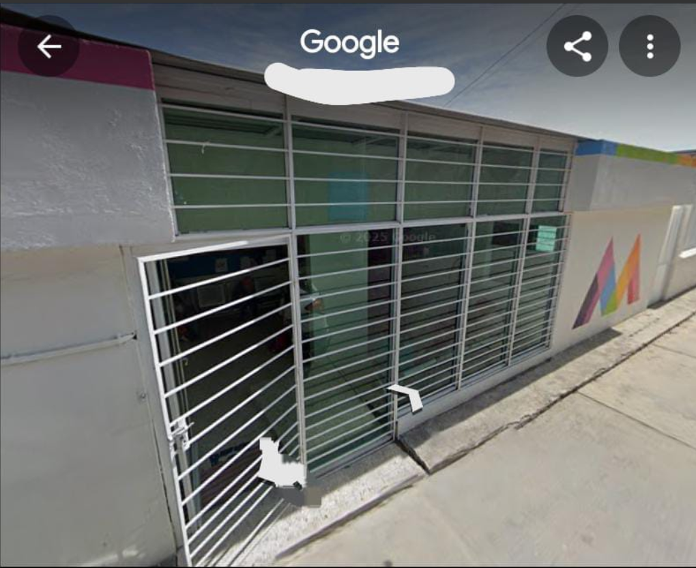

La Clinica del IMSS de Santa Cruz Tepexpan del municipio de Jiquipilco ya lleva mas de 40 años
en funcionamiento, anteriormente era una pequeñoa clinica, manejaba con algunos programas que
actualmete todavia siguen en curso, hace 26 años ya no se atenden partos, anteriormente si
pero en la actualidad no, ya que se contaba en el area de hospitalizacion hubo varias
modificaciones a lo largo del tiempo, actualmente ahora tenemos consulta externa, se cuenta
con un area de farmacia, sala de espera, area de medicinapreventiva, area de psicologia, area
de enfermeria. Por el pasillo de la clinica se encuentran diferentes espacios, entre los
cuales se tienen estimulacion temprana e infeccion o tambien conocida como area de ida y
vuelta, area de RPV.

